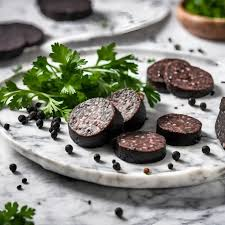

The Allfather's Bloodpudding

Description
Blood pudding, also known as black pudding, is a traditional dish made from blood, oats, and a blend of spices. It is a hearty, flavorful sausage that pairs beautifully with eggs, potatoes, or served simply fried. This recipe follows a classic method to create a savory, rich sausage perfect for breakfast or as a standalone dish.
Ingredients
- 2 cups fresh pig’s blood (or dried blood, reconstituted)
- 1 cup steel-cut oats
- 1 large onion, finely chopped
- 2 cups milk
- 2 tablespoons pork fat (or butter)
- 1 teaspoon ground allspice
- 1 teaspoon ground black pepper
- 1 teaspoon salt
- ½ teaspoon dried thyme
- ½ teaspoon dried marjoram
- 1 cup breadcrumbs
- Natural sausage casings (optional, for traditional sausage form)
Directions
- In a saucepan, bring the milk to a simmer. Stir in the oats and cook over low heat until soft, about 15-20 minutes. Let the mixture cool slightly.
- In a skillet, melt the pork fat or butter over medium heat. Add the chopped onion and sauté until soft and translucent, about 5 minutes. Set aside.
- In a large mixing bowl, combine the blood, cooked oats, sautéed onions, breadcrumbs, and all the spices (allspice, black pepper, salt, thyme, and marjoram). Mix thoroughly until well combined.
- If using natural casings, rinse them thoroughly and stuff them with the blood mixture using a sausage stuffer. Tie off the ends securely.
- If you prefer a loaf, pour the mixture into a greased loaf pan. Place the pan in a water bath (bain-marie) and bake in a preheated oven at 325°F (160°C) for about 1.5 hours. If using casings, simmer the sausages gently in water for about 30-40 minutes, ensuring they don't boil, which can cause them to burst.
- Once cooked, let the pudding cool slightly. Slice and fry in a little oil or butter until crispy on the outside. Serve hot.
Serving Suggestions
Enjoy blood pudding with fried eggs, toast, or roasted potatoes. It also pairs well with apple slices or a tangy chutney for contrast.